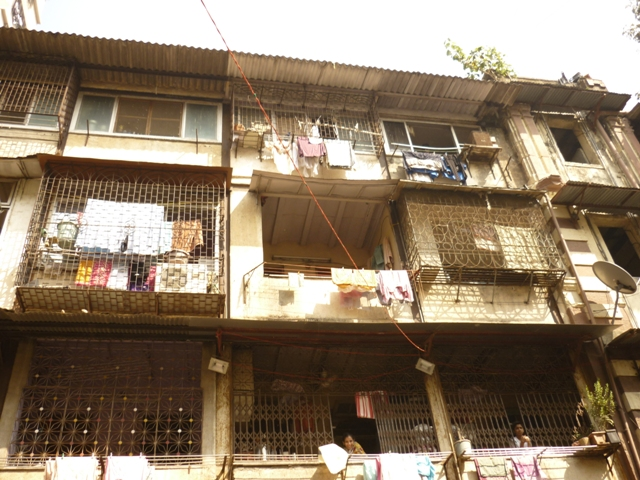
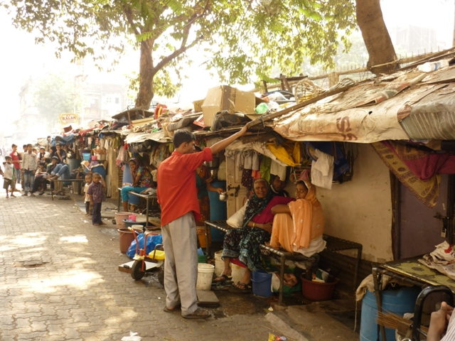

پذيرش > تریبون > مقالات > از روسپی خانه های بمبئی تا پونا/خانه ای امن برای کودکان زنان تنفروش/ ویژه نامه 8 مارس (...)


 از روسپی خانه های بمبئی تا پونا/خانه ای امن برای کودکان زنان تنفروش/ ویژه نامه 8 مارس 1391 از روسپی خانه های بمبئی تا پونا/خانه ای امن برای کودکان زنان تنفروش/ ویژه نامه 8 مارس 1391
17 اسفند 1391 - - نسخه قابل چاپ
تغییر برای برابری: محبوبه حسین زاده
پیش درآمد: تصویرهایی که در مورد هند، سرزمین عجایب، در ذهن داشتم، با زندگی در این کشور و تحصیل در رشته جامعه شناسی، روز بروز عجیب تر، متناقض تر و پیچیده تر شد! کشوری با قانون تقریبا مترقی ولی جامعه ای که همچنان پایبندی شدیدی خود به سنت ها را حفظ کرده است. کشوری که در قانون اساسی آن به صراحت در مورد برابری جنسیتی صحبت شده است و انواع و اقسام قوانین، سهمیه ها و دستورالعمل های حمایتی برای رفع تبعیض علیه زنان بخصوص زنان متعلق به «کاست» های پایین، تصویب و اجرایی شده است، اما همچنان زنان این کشور تحت تبعیض های شدید قرار دارند. کشوری که از یکسو، زنان را می توان در بالاترین رده های سیاسی، مدیریتی و اجرایی دید و همزمان آمار بالای قتل نوزادان دختر و یا سقط جنین های دختر و برهم خوردن تناسب جنسیتی، به یکی از دغدغه های مهم دولت و گروه های فعال زنان تبدیل شده است.
مسلما بسیاری از ما به خاطر اخباری که در مورد سوزاندن عروس های جوان برای نداشتن جهیزیه، خرید و فروش زنان، ازدواج کودکان، و تجاوزهای گروهی به زنان هندی خوانده و یا شنیده ایم، تصویر مبهمی از وضعیت زنان هندی در ذهن داریم. اما شاید کمتر در مورد جنبش زنان هند و دستاوردهای آن، سازمان های غیردولتی و گروه های پیشروی زنان و تلاش آنها برای بهبود وضعیت زنان و دستیابی به برابری جنسیتی خوانده باشیم.
مجموعه مصاحبه هایی با تعدادی از سازمان های غیردولتی فعال و پیشرو در حوزه زنان(مستقر در پونا و یا بمبئی) و مجموعه مقالاتی که به بررسی جنبش زنان هند، تبعیض علیه زنان و قوانین حمایتی مرتبط با زنان در هند می پردازد، تلاشی است برای ارائه تصویری درست از وضعیت زنان هندی و انتقال دستاورهای جنبش زنان هند که به مرور در سایت تغییر برای برابری منتشر می شود.
*****
فقط کافیست تا از خیابان اصلی که همانند دیگر خیابانهای مرکزی و شلوغ شهر، ترکیب ناهمگونی است از برج های شیک و نوساز چندده طبقه، خانه های قدیمی که بوی نا و کهنگی از چندده متری آنها به راحتی استشمام می شود و تعداد زیادی مغازه های کوچک و بزرگ عبور کنی تا وارد محله بزرگی بشوی که نام «قدیمی ترین و دومین ردلایت بزرگ آسیا» را با خود یدک می کشد. بعد از پیاده شدن از ماشین و رهایی از ترافیک دیوانه کننده ای که حاصل عبور انواع و اقسام ماشین، ریکشا، موتور، اتوبوس، دوچرخه و حتی گاری های اسب کش است، کمتر از پنج دقیقه پیاده روی کافی است تا از شلوغی همیشگی و پایان ناپذیر خیابان اصلی و انبوه مردمی که با سرعت در رفت و آمد هستند، به محله ای برسی که بیشتر از یک قرن است، سکونتگاه زنانی شده است که با تنفروشی، روزگار می گذرانند؛ زنانی که حدود 80درصد آنان، در سنین نوجوانی ربوده شده و توسط گروه های قاچاق انسان، سر از روسپی خانه های این منطقه درآورده اند.

شرح عکس: نمای خارجی یکی از روسپی خانه های منطقه کاماتیپورا/نام عکاس محفوظ است
برخلاف تجارت پرسود صاحبان روسپی خانه ها و گروه های قاچاق انسان، «کاماتیپورا» گویا اصرار دارد تا واقعیت تلخ بدبختی و رنج زنانش را به رهگذران و مشتریان عرضه کند. به هر طرف که سر می چرخانی، خانه های دوسه طبقه بسیار قدیمی و حتی در آستانه ریزش می بینی که تراس های بیشتر آنها با نرده های مشبک آهنی محصور شده و از بسیاری از نرده ها و پنجره ها، انبوه لباس های زنانه و بچگانه آویزان شده است. در آستانه در ورودی بیشتر این خانه ها، زنانی برای جلب مشتری به انتظار ایستاده اند؛ از زنان نوجوان تا زنانی میانسال، از زنان آرایش کرده با لباسها و حتی ساری هایی خوشرنگ و تمیز تا زنانی که گویا سالهاست رنگ آب را به خود ندیده اند. در چندین منطقه از کاماتیپورا، در پیاده روهای خیابان های فرعی با اتاقک هایی چوبی و تقریبا زهوار درفته مواجه می شویم که ابعاد هرکدام از آنها، شاید فقط نیم متر بزرگتر از تختخواب های ساده ای است که در آن قرار گرفته است. این اتاقک ها، محل کسب و زندگی زنان روسپی مستقل است. پرده ای پارچه ای که جلوی درب هرکدام از اتاقک ها کشیده شده است، محل کسب و زندگی این زنان را از پیاده رو جدا می کند.

شرح عکس: زنان تنفروش در اتاقک هایشان در انتظار مشتری
در قسمت بزرگی از کاماتیپورا، روبروی روسپی خانه ها، اتاقک های سقف شیروانی کوچکی قرار گرفته است که کارگران فقیر و خانواده هایشان در آن زندگی می کنند؛ سهم هر خانواده، اتاقکی است که ابعاد آن به 20متر هم نمی رسد. داخل اتاقک ها، آنقدر داغ و تنگ و تاریک است که بیرون هر اتاقک، تخت فلزی قرار گرفته و اعضای خانواده از آن به عنوان اتاق نشیمن استفاده می کنند! بشکه های بزرگ آبی رنگ برای نگهداری آب در روبروی هر اتاقک قرار گرفته و لباس ها و وسایل پخت و پز از در و دیوار خارجی اتاقک ها آویزان شده است. در هر چندصدمتر، کوهی از زباله های متعفن رها شده است. در این فضایی که به سختی می توان نفس کشید، کودکان زنان روسپی به همراه دیگر کودکان فقیر، مشغول بازی و شیطنت هستند.

شرح عکس: فقر و دیگر هیچ
حجم سنگین و غیرقابل تحمل فقر، تبعیض و نکبتی که از در و دیوار این منطقه می بارد، باعث می شود تا همانند دوهفته قبل، باز هم در محله کاماتیپورا سرگردان شویم. مردهای محله با تعجب به ما نگاه می کنند و عده ای از کودکان محله به سرکردگی دختر نوجوان جسوری دنبالمان راه افتاده اند تا بدانند که در قلمرو بازی آنها چه می کنیم. بالاخره با کمک همین بچه ها، وارد مدرسه ای دولتی می شویم تا شاید یکنفر برای یافتن آدرس، کمکمان کند. مدرسه تعطیل است اما نگهبان مدرسه بالاخره به کمکمان می آید و ما را تا محل مورد نظر همراهی می کند.
تلاش برای خروج کودکان از چرخه روسپیگری
همین که پایمان را داخل دفتر ان جی ا می گذاریم، با استقبال حدود 20کودک سه تا نه ساله روبرو می شویم. لباسهای تقریبا تمیز و مرتبی بر تن دارند، بعضی از آنها خجالتی به نظر می رسند در حالی که از چشمهای بعضی دیگر از آنها، برق شیطنت می بارد. بلافاصله به گوشه ای از دفتر می روند و سعی می کنند آرام و مرتب روی زمین بنشینند در حالی که زیرچشمی مراقب حضور ما هستند. ناخودآگاه با دیدن چهره های دوست داشتنی شان با هجوم این فکر مواجه می شوم که این کودکان، چه تصویری از روسپگیری مادرانشان دارند؟
زن، حدود بیست سالی است که مدیریت این ان جی ا را برعهده دارد. استاد دانشگاه است، ظاهری جدی دارد و محکم و شمرده سخن می گوید. پیش از شروع گفتگو، دوباره شرط و شروطی را که تلفنی گفته بود، تکرار می کند. قول می دهم که هیچ وقت در هیچ کدام از گزارشهایم به اسم ان جی ا و نام گردانندگان آن و اقدامات آنها برای نجات و یا در حقیقت فراری دادن زنان از روسپی خانه ها اشاره ای نکنم.
می گوید:« ما در این سازمان به زنان روسپی و بچه های آنها خدمات می دهیم و بیشتر تمرکز ما بر روی ارائه خدمات به زنان روسپی قربانی قاچاق انسان و فرزندان آنهاست. کودکان این زنان در خود روسپی خانه ها با مادرانشان و دیگر زنان زندگی می کنند. حتی در بسیاری از موارد، وقتی که مادر این بچه ها و یا حتی یک زن دیگر مشغول ارائه خدمات جنسی به مشتریانش است، این بچه ها در اتاق ها حضور دارند و شاهد همه ماجرا هستند. به همین خاطر ما تلاش می کنیم تا با شناسایی این کودکان، آنها را به این مرکز بیاوریم و آموزشهای لازم را به آنها ارائه دهیم تا حداقل بچه ها در روسپی خانه ها بزرگ نشوند و از این طریق از ورود نسل دوم به کار روسپی گری جلوگیری کنیم».
کودکانی که به آموزش های متفاوتی احتیاج دارند
پروسه آموزش کودکانی که در فضای خشونت روسپی خانه ها بزرگ می شوند، مشکل و زمان بر است. او می گوید:« مددکاران ما به اطراف روسپی خانه ها سر می زنند و بچه ها را شناسایی می کنند. بعد از آن با مادران این بچه ها صحبت می کنیم تا کودکان خود را به این مرکز بیاورند. ابتدا از آنها تست سلامتی می گیریم، بیشتر این بچه ها دچار کمبود آهن هستند و یا برخی از آنها از طریق مادرانشان مبتلا به اچ.آی.وی شده اند. علاوه بر مشکلات جسمی، این بچه ها دارای مشکلات رفتاری هم هستند. اغلب خشن هستند،با دیگر بچه ها دعوا می کنند، الفاظ جنسی رایج در روسپی خانه ها را بکار می برند و حتی بدون اینکه درکی از عمل خود داشته باشند، تظاهر به انجام رابطه جنسی می کنند چون در روسپی خانه ها بزرگ شده اند و شاهد این برخوردها بوده اند. ولی ما تلاش می کنیم تا به مرور این رفتارهایشان را تغییر دهیم ولی این تغییر، پروسه ای است که راجع به آن فکر و برنامه ریزی می کنیم. ابتدا سعی می کنیم از طریق برنامه های آموزشی، نقاشی و شعر، بچه ها را نسبت به یادگیری علاقه مند کنیم».
صدای دعاخواندن کودکان که اوج می گیرد، صدای او دیگر به گوشمان نمی رسد. با صدای بلندتر توضیح می دهد که به بچه ها یاد داده اند قبل از غذاخوردن، همه با هم دعا بخوانند. بچه ها، گرداگرد زن دیگری نشسته اند تا از قابلمه بزرگی که در دست دارد، درون سینی های کوچکشان غذا بریزد.
کودکان به مدت دوسال در این مرکز می مانند؛ در همین اتاق کوچک، غذا می خورند، شبها همین جا می خوابند و همین جا هم تحت آموزش قرار می گیرند. مادرانشان هم می توانند در طول روز برای دیدن بچه ها به این مرکز بیایند. مدیر ان جی ا می گوید:« بچه ها، یکی دوسال در این مرکز می مانند تا سلامت جسمی خود را بدست بیاورند و از لحاظ رفتاری تغییر کنند تا آماده رفتن به مدرسه شوند. ترجیح خود ما این است که بعد از آن، کودکان به مدرسه های شبانه روزی بروند تا شبها هم از روسپی خانه ها دور باشند ولی خب باید مادرانشان آمادگی این کار را داشته باشند».
مادران و کودکان بدون شناسنامه و هویت
اما این کودکان برای ورود به جامعه با مشکل بزرگتری هم مواجه هستند یعنی نداشتن هویت. مدیر ان جی ا می گوید:« برای ثبت نام این کودکان در مدارس دولتی، احتیاجی به شناسنامه نیست ولی در هر صورت باید این کودکان هویت و شناسنامه دار شوند تا درآینده وارد دانشگاه و محیط های کاری شوند و یا حتی بتوانند خانه ای برای خود اجازه کنند. اما مشکل اصلی اینجاست که مادران این کودکان هم شناسنامه ندارند. چون این زنها، دزدیده و توسط گروه های قاچاق انسان، به روسپی خانه ها فروخته شده اند، هیچ مدرک شناسایی با خود ندارند. از طرف دیگر چون بسیاری از این زنها از ایالات دیگر به اینجا قاچاق شده اند، نمی توانند به زبان محلی این ایالت حرف بزنند و همین امر برقراری ارتباط با آنها را بسیار مشکل می کند. ولی در هر صورت ما تلاش خود را می کنیم تا با اطلاعاتی که از مادران می گیریم و از طریق همکاری با ارگان های دولتی، برای کودکانشان کارت شناسایی و گواهی هویت درست کنیم».
زحمات و تلاشهای اعضای این مرکز بی نتیجه نمانده است. مدیر ان جی ا، آماری از موفقیت های کودکان تحت پوشش این مرکز ارائه می دهد؛ از آنهایی که وارد دانشگاه شده اند؛ آنهایی که در مشاغل خوب استخدام شده اند؛ آنهایی که ازدواج کرده اند و بچه دار شده اند:« در این دو دهه فعالیت، حدود 500 بچه را تحت سرپرستی و آموزش قرار داریم. از دبستان تا دانشگاه با آنها همراه بوده ایم. البته حدود ده تا بیست درصد کودکان، در میانه راه از ما جدا شدند چون مادرانشان، روسپی گری را رها کرده و کار دیگری پیدا کرده اند و کودکان خود را هم از ما تحویل گرفته اند. بعضی از بچه ها هم به دلیل ابتلا به اچ.آی.وی دیگر در بین ما نیستند».

شرح عکس: نمایی دیگر از اتاقک های محل زندگی و کار زنان تنفروش
او برایمان از مراحل شناسایی، بازپروری و فراری دادن زنان از روسپی خانه ها می گوید اما چون این ان جی، در خود کاماتیپورا واقع شده، این کار کاملا محرمانه و توسط گروه های محرمانه صورت می گیرد( و البته ما هم به قول خود پایبند می مانیم). از او می خواهیم در مورد وضعیت زنان در روسپی خانه ها برایمان بگوید:« زنانی که قاچاق می شوند، با قیمت های متفاوتی به روسپی خانه ها می فروشند؛ این قیمت بر حسب سن و باکرده بودن این زنان متغیر است. یک زن باید حداقل دوسال در این روسپی خانه ها بماند تا پولی را که رئیس روسپی خانه ها برای خریدش پرداخت کرده، از راه تنفروشی تامین کند. در این دوسال، هیچ پولی به خود زن داده نمی شود و فقط به او غذا و لباس می دهند. حتی هر روز آنها را چک می کنند تا پولی با خود پنهان کرده نباشند چون گاهی مشتری های مرد به خود زنان جوان هم پول می دهند. در این دوسال، اگر زن، مریض شود، او را به مطب دکتر می برند ولی در غیر این صورت اجازه نمی دهند زن از روسپی خانه خارج شود. البته مشکل دیگر هم این است که چون این زنها قاچاق شده اند، نه تنها زبان بلد نیستند بلکه نمی دانند که به کجا آورده شده اند. اگر زن جوان زرنگ باشد و زبان یاد بگیرد و شلوغ کند تا بتواند از روسپی خانه خارج شود، مادام(مسئول روسپی خانه) ترجیح می دهد که بگذارد دختر آنجا را ترک کند البته اگر دختر به اندازه ای که برای خریدش پرداخت کرده اند، از طریق تنفروشی برایشان پول درآورده باشد. بعضی مواقع هم مشتری حاضر می شود که با زن ازدواج کند، هرچند هستند زنانی که همچنان بعد از ازدواج هم زنان به این شغل ادامه می دهند».
برای فعالیت، هیج محدودیت دولتی نداریم
زندگی و فعالیت در جامعه ای مثل ایران که سازمان های غیردولتی برای فعالیت با محدودیت های بسیار زیادی مواجه هستند و در سالهای اخیر بسیاری از آنان عملا امکان فعالیت نداشته اند، باعث می شود تا از مشکلات این ان جی ا با ارگان های دولتی بپرسیم. مدیر ان جی ا می گوید:« مسلما ما برای انجام فعالیت هایمان با هیچ محدودیتی از طرف دولت مواجه نشده ایم. دولت هیچ مشکلی با مجوز ما ندارد. اما مشکل اینجاست که دولت برای اسکان شبانه روزی کودکان در این مراکز و یا شلترها، ضوابط و مقررات مشخصی تعیین کرده است و مثلن ما باید متراژ و امکانات مشخصی برای اسکان شبانه روزی این کودکان داشته باشیم. ما هم فاقد این امکانات هستیم و حتی در طول شب، مجبور هستیم میز و صندلی های دفتر را کناری بگذاریم تا برای کودکان جای خواب درست کنیم. ولی از طرفی نمی توانیم بچه ها را شب نزد مادرانشان بفرستیم چون فضای روسپی خانه ها طوری است که سهم هر زن، یک اتاقک قفس مانند با یک تخت است و مثلن یک اتاق بین 5 تا 8 زن تقسیم شده است. بچه های کوچکتر مجبورند در همین اتاق ها بمانند در حالی که مادر و یا دیگر زنان اتاق مشغول ارائه خدمات جنسی به مشتریان خود هستند. خب وقتی کودکان دوباره به این فضا برگردند، تمام زحمات آموزشی ما هدر می رود اما دولتی ها این را درک نمی کنند و فقط متراژ دفتر ما برای اسکان شبانه روزی این کودکان برایشان مهم است در حالی که ما هم پول خرید یک مرکز بزرگ را نداریم».
حالا دیگر کودکان، غذاهایشان را خورده اند و هرکدام روی موکتی که در گوشه ای از دفتر پهن شده، به ردیف دراز کشیده اند و مربی تلاش می کند تا آنها را بخواباند. دوسه نفر از آنها، اسباب بازی کوچکی در بغل دارند و زیر لب مشغول صحبت با اسباب بازی هایشان هستند. مادران چندنفر از این کودکان هم آمده اند و در گوشه دیگری از موکت نشسته اند در حالی که کودکانشان روی زوانوهایشان به خواب رفته اند. حالا دیگر تلاش می کنم تا با تمام توصیف هایی که از داخل روسپی خانه ها شنیده ام، فضای زندگی این کودکان را تصویر کنم؛ کودکانی که مادرانشان قربانی قاچاق انسان شده اند و خودشان قربانی جامعه ای که چشمهایش را بر رنج و بردگی اجباری مادران این کودکان بسته است.
این گزارش ادامه دارد.
ارسال به
بالاترین
،
توییتر
،
فریندفید
،
فیسبوک
در همين بخش :
 دهمین دورۀ مراسم تندیس صدیقه دولت آبادی ۱۳۹۲ دهمین دورۀ مراسم تندیس صدیقه دولت آبادی ۱۳۹۲
کارت پستالهایی به بهانهی هشت مارس و به یاد همهی مبارزین راه برابری
بیانیه بیش از 350 تن از مدافعان حقوق زنان به مناسبت روز جهانی زن؛ زنان هر روز فرودستتر میشوند
لباسی که برای تن ما دوخته اند! /اعظم بهرامی
چالشها و چشمانداز فعالیت مدنی زنان
ديگر بخش ها :
طرح یک میلیون امضا
|
مقالات
|
سایت نوشته ها
|
اخبار
|
گزارش كمپين
|
گفت و گو
|
علیه سکوت
|
كوچه به كوچه
|
نامه های شما
|
گزارش ویژه
|
گفتگو با اعضا
|
ویژه سالگرد کمپین
|
تصویر برابری
|
دل آرام علی
|
تریبون
|
مقالات
|
تاریخ شفاهی
|
خارج از چارچوب
|
کتابخانه
|
درباره کمپین
|
کمپین در شهرها
|
کمپین در بند
|
صدای تغییر
|
ویژه 22 خرداد
|
لایحه حمایت از خانواده
|
گالری
|
عشا مومنی
|
امیر یعقوبعلی
|
خدیجه مقدم
|
راحله عسگری زاده و نسیم خسروی
|
پروین اردلان،جلوه جواهری، مریم حسین خواه، ناهید کشاورز
|
زینب پیغمبرزاده
|
سعیده امین، سارا ایمانیان، محبوبه حسین زاده، ناهید کشاورز و همایون نامی
|
احترام شادفر
|
نسیم سرابندی زاده،فاطمه دهدشتی
|
وبلاگ مهمان
|
پرونده خرم آباد
|
دستگیری ها
|
مریم مالک
|
پرستو اللهیاری
|
مهرنوش اعتمادی
|
سمیه رشیدی
|
Other Languages
|
همراهان
|
«فراخوان کمپین ده روز با بهاره هدایت»
| English
|